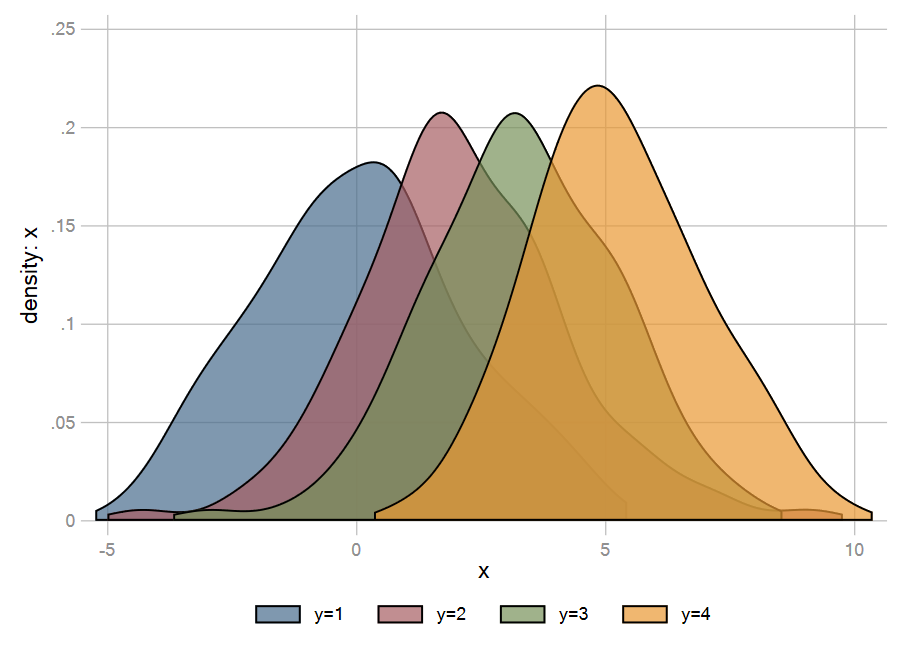
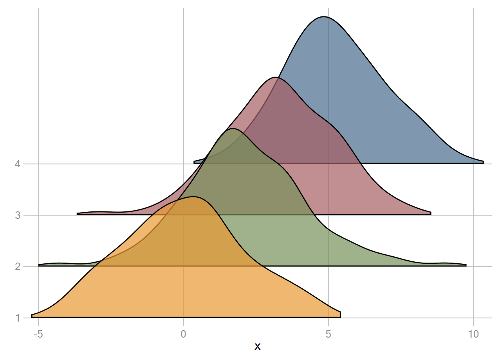
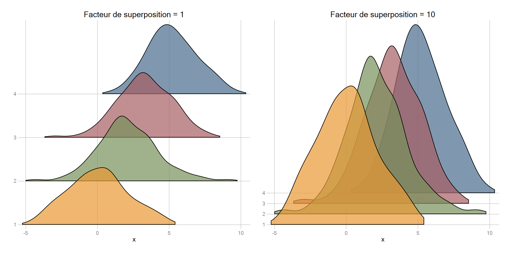
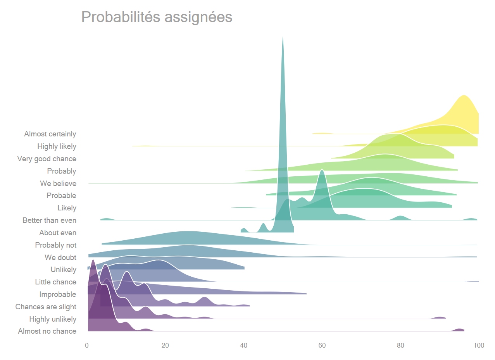
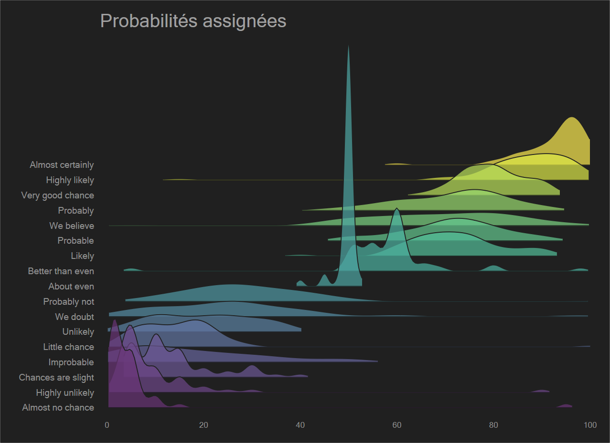

Scaling des densités
\(iscale = \frac{(y_{max} - y_{min})}{(n-1)\times d_{max}}\)
Lorsquee \(y\) n’est pas continue, ce facteur se réduit à : \(\frac{1}{d_{max}}\)
Exemple
clear
set obs 399
gen x= rnormal(0,2) in 1/99
replace x= rnormal(1,2) in 100/199
replace x= rnormal(2,3) in 200/299
replace x= rnormal(3,4) in 300/399
gen y=1 in 1/99
replace y=2 in 100/199
replace y=3 in 200/299
replace y=4 in 300/399
grstyle init
grstyle set mesh, compact horizontal
grstyle set legend, noboxDensitées superposées
forv i=1/4 {
kdensity x if y==`i', kernel(gauss) gen(x_`i' d_`i') nograph n(200)
local graph `graph' area d_`i' x_`i', color(%70) ||
}
tw `graph', legend(order(1 "y=1" 2 "y=2" 3 "y=3" 4 "y=4") row(1))
drop x_* d_*
Densités empilée par la méthode de ridge
Niveau d’automatisation intermédiaire pour faciliter la compréhension du programme (pricipalement j’ai garder telles quelles les variables y x)
Estimation des densités : Prévoir un contrôle du nombre d’observations pour chaque valeur de la variable (facile à programmer)
Package externe à installer: ggtools
Commande utilisée : glevelsof . Permet de générer une macro avec les valeurs en ordre décroissant. On évite donc de créer un compteur décroissant dans la boucle (type `i–’) et, dans le cas ou y n’est pas une suite de valeur type 1,2,3,4… évite une étape de programmation particulièrement pénible
ssc install ggtools
* glevelsof var, local(l) // = levelsof
* glevelsof –var, local(l) // valeur de la macro l en ordre décroissantDémarche:
Valeurs de iscale:
maxd)yrange), et on récupère le nombre de valeurs de la variable (macro n_1) . Ne sera utile que si y n’est pas discretequi kdensity x, gen(x0 d0) kernel(gauss) nograph
qui sum d0
local maxd `r(max)'
drop d0 x0
glevelsof -y, local(l)
qui sum y
local ymin `r(min)'
local ymax `r(max)'
local wc: word count(`l')
local n_1= `wc' - 1
local yrange = `ymax' - `ymin'
local iscale `yrange'/(`n_1'*`maxd')Syntaxe du graphique : seuils – densités – macro empilée
Pour chaque valeur de y (boucle foreach):
ggridge de R). Plus cette valeur est élevée, plus les densités vont se superposer (on va retomber sur le premier graphique)foreach y of local l {
gen y0_`y' = `y'
qui kdensity x if y==`y', kernel(gauss) n(200) gen(x_`y' d_`y') nograph
qui gen y1_`y' = y0_`y' + d_`y'*`iscale'*1.8
local graph `graph' rarea y0_`y' y1_`y' x_`y', fcolor(%70) lc(black) ||
}On exécute le graphique
tw `graph', legend(off) ylabel(1(1)4)
drop x_* d_* y0_* y1_*
Ensemble du programme:
* iscale
tempvar x0 d0
qui kdensity x, gen(`x0' `d0') kernel(gauss) nograph
qui sum `d0'
local maxd `r(max)'
glevelsof -y, local(l)
qui sum y
local ymin `r(min)'
local ymax `r(max)'
local wc: word count(`l')
local n_1= `wc' - 1
local yrange = `ymax' - `ymin'
local iscale `yrange'/(`n_1'*`maxd')
* Graph
foreach y of local l {
gen y0_`y' = `y'
qui kdensity x if y==`y', kernel(gauss) n(200) gen(x_`y' d_`y') nograph
qui gen y1_`y' = y0_`y' + d_`y'*`iscale'*1.8
local graph `graph' rarea y0_`y' y1_`y' x_`y', fcolor(%70) lc(black) ||
}
tw `graph', legend(off) ylabel(1(1)4) /*name(g2, replace) title("Facteur de superposition = 10")*/
drop x_* d_* y0_* y1_*
Application à l’exemple sur les probabilités assignées aux expressions
https://mthevenin.github.io/stata_fr/graphiques.html#522_Violin_plo
La base a été transformée en format long, pour la récupérer :
webuse set "https://raw.githubusercontent.com//mthevenin/stata_fr/master/"
webuse "probability_long.dta", clear
webuse setHabillage/options :


* iscale
tempvar x0 d0
qui kdensity p, gen(`x0' `d0') kernel(gauss) nograph
qui sum `d0'
local maxd `r(max)'
glevelsof -proba, local(l)
qui sum proba
local ymin `r(min)'
local ymax `r(max)'
local wc: word count(`l')
local n_1= `wc' - 1
local yrange = `ymax' - `ymin'
local iscale `yrange'/(`n_1'*`maxd')
* Syntaxe du graphique
foreach j of local l {
gen y0_`j' = `j'
qui kdensity p if proba==`j', kernel(gauss) n(200) gen(x_`j' d_`j') nograph
qui gen y1_`j' = y0_`j' + d_`j'*`iscale'*.5
colorpalette viridis, nograph n(17) opacity(70)
local graph `graph' rarea y0_`j' y1_`j' x_`j' if x_`j'>=0 & x_`j'<=100, ///
lw(0) fc("`r(p`j')'") || ///
rline y0_`j' y1_`j' x_`j' if x_`j'>=0 & x_`j'<=100, lw(.2) lc(gs15) || }
* labels sur l'axe y
local labn: value label proba
forv i=1/17 {
local ylab`i' : label `labn' `i'
local ylab `ylab' `i' "`ylab`i''"
}
* Exécution du graphique
tw `graph', legend(off) ///
graphr(color(gs15)) plotr(color(gs15)) ///
ylabel(`ylab', glw(0) labs(2)) xlabel(,glw(0) labs(1.8)) ///
title("Probabilités assignées", pos(11) color(gs2)) xtitle("")A tester: une commande qui peut générer le graphique